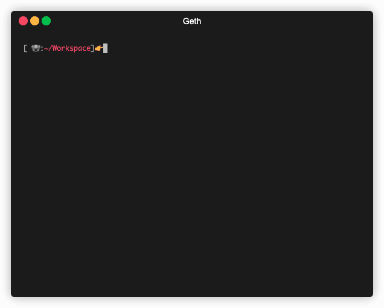
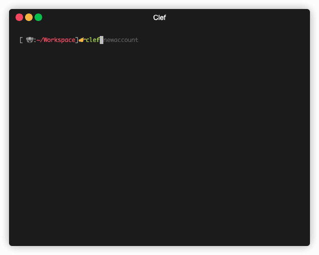

Getting Started with Geth
To use Geth, you need to install it first. You can install Geth in a variety of ways that you can find in the “Install and Build” section. These include installing it via your favorite package manager, downloading a standalone pre-built binary, running it as a docker container or building it yourself.
For this guide, we assume you have Geth installed and are ready to find out how to use it. The guide shows you how to create accounts, sync to a network, and then send transactions between accounts.
This guide uses Clef, which is our preferred tool for signing transactions with Geth, and will replace Geth’s account management.
Initialize Clef
First, initialize Clef with a random master seed, which is also encrypted with the password you define. The password must be at least 10 characters.
clef init

Create accounts
Create two accounts with the clef newaccount command,
set a password for each of them, and note the public address for each.

Clef outputs a debug message about Failed to reload keystore contents, we fix that in a later step.
Start Geth
Networks
You can connect a Geth node to several different networks using the network name as an argument. These include the main Ethereum network, a private network you create, and three test networks that use different consensus algorithms:
- Ropsten: Proof-of-work test network
- Rinkeby: Proof-of-authority test network
- Görli: Proof-of-authority test network
For this guide, we use the Görli network. The default port is 30303, so you need to enable at least outgoing access from your node to that port.
Sync modes
You can start Geth in one of three different sync modes using the --syncmode "<mode>"
argument that determines what sort of node it is in the network.
These are:
- Full: Downloads all blocks (including headers, transactions, and receipts) and generates the state of the blockchain incrementally by executing every block.
- Fast: Downloads all blocks (including headers, transactions and receipts), verifies all headers, and downloads the state and verifies it against the headers.
- Snap (Default): Same functionality as fast, but with a faster algorithm.
- Light: Downloads all block headers, block data, and verifies some randomly.
For this tutorial, we use a light sync:
Start Clef
Start Clef, setting the keystore and chain id (goerli is 5) for the network we want to connect to:
clef --keystore <GETH_DATA_DIR>/keystore --chainid 5
To begin with, you see errors about a missing keystore, and we fix that soon.
Under Linux the default Geth data directory is ~/.ethereum
Start Geth
Open another command line window and run command below, which also enables the Geth RPC interface (see below), and sets Clef as the transaction signer.
geth --goerli --syncmode "light" --http --signer=<CLEF_LOCATION>/clef.ipc
By default Clef’s location under Linux is ~/.clef, but the signer’s location cannot
include a ~ so replace it with your home directory.
Get ETH
Unless you have Ether in another account on the Görli network, you can use a faucet to send ETH to one of your new account addresses to use for this guide.
Connect to Geth with IPC or RPC
You can interact with Geth in two ways: Directly with the node using the JavaScript console over IPC, or connecting to the node remotely over HTTP using RPC.
IPC allows you to do more, especially when it comes to creating and interacting with accounts, but you need direct access to the node.
RPC allows remote applications to access your node but has limitations and security
considerations, and by default only allows access to methods in the eth and shh
namespaces. Find out how to override this setting in the RPC docs.
Using IPC
Connect to console
Connect to the IPC console on a node from another terminal window:
geth attach <IPC_LOCATION>
You can see the IPC location in the output of the network node geth process. By default, when using
Görli, it is ~/.ethereum/goerli/geth.ipc.
Check account balance
web3.fromWei(eth.getBalance("<ADDRESS_1>"),"ether")
Getting the balance of an account does not require a signed transaction, so Clef does not ask for approval, and Geth returns the value.
Note that this step requires the initial synchronization to end. If you get an error message, return to the console with the network node Geth and wait until it is synchronized. You know that your Geth is synchronized when it is only importing a small number of blocks (one or two, usually) at a time.
Send ETH to account
Send 0.01 ETH from the account that you added ETH to with the Görli faucet, to the second account you created:
eth.sendTransaction({from:"<ADDRESS_1>",to:"<ADDRESS_2>", value: web3.toWei(0.01,"ether")})
This action does require signing the transaction, so go to the command line window with Clef running to see that Clef prompts you to approve it, and when you do, asks you for the password for the account you are sending the ETH from. If the password is correct, Geth proceeds with the transaction.
To check, get the account balance of the second account:
web3.fromWei(eth.getBalance("<ADDRESS_2>"),"ether")
Using RPC
Connect to RPC
You can use standard HTTP requests to connect to a Geth node using the RPC APIs, using this syntax:
curl -X POST http://<GETH_IP_ADDRESS>:8545 \
-H "Content-Type: application/json" \
--data'{"jsonrpc":"2.0", "method":"<API_METHOD>", "params":[], "id":1}'
Check account balance
curl -X POST http://<GETH_IP_ADDRESS>:8545 \
-H "Content-Type: application/json" \
--data '{"jsonrpc":"2.0", "method":"eth_getBalance", "params":["<ADDRESS_1>","latest"], "id":1}'
Getting the balance of an account does not require a signed transaction, so Geth returns the value without invoking Clef. Note that the value returned is in hexadecimal and WEI. To get the ETH value, convert to decimal and divide by 10^18.
Send ETH to accounts
Send 0.01 ETH from the account that you added ETH to with the Görli faucet, to the second account you created:
curl -X POST http://<GETH_IP_ADDRESS>:8545 \
-H "Content-Type: application/json" \
--data '{"jsonrpc":"2.0", "method":"eth_sendTransaction", "params":[{"from": "<ADDRESS_1>","to": "<ADDRESS_2>","value": "0x9184e72a"}], "id":1}'
This action does require signing, so Clef prompts you to approve it, and if you do, asks you for the password of the account from which you are sending the ETH. If the password is correct, Geth proceeds with the transaction.
To check, get the account balance of the second account:
curl -X POST http://<GETH_IP_ADDRESS>:8545 \
-H "Content-Type: application/json" \
--data '{"jsonrpc":"2.0", "method":"eth_getBalance", "params":["<ADDRESS_2>","latest"], "id":1}'